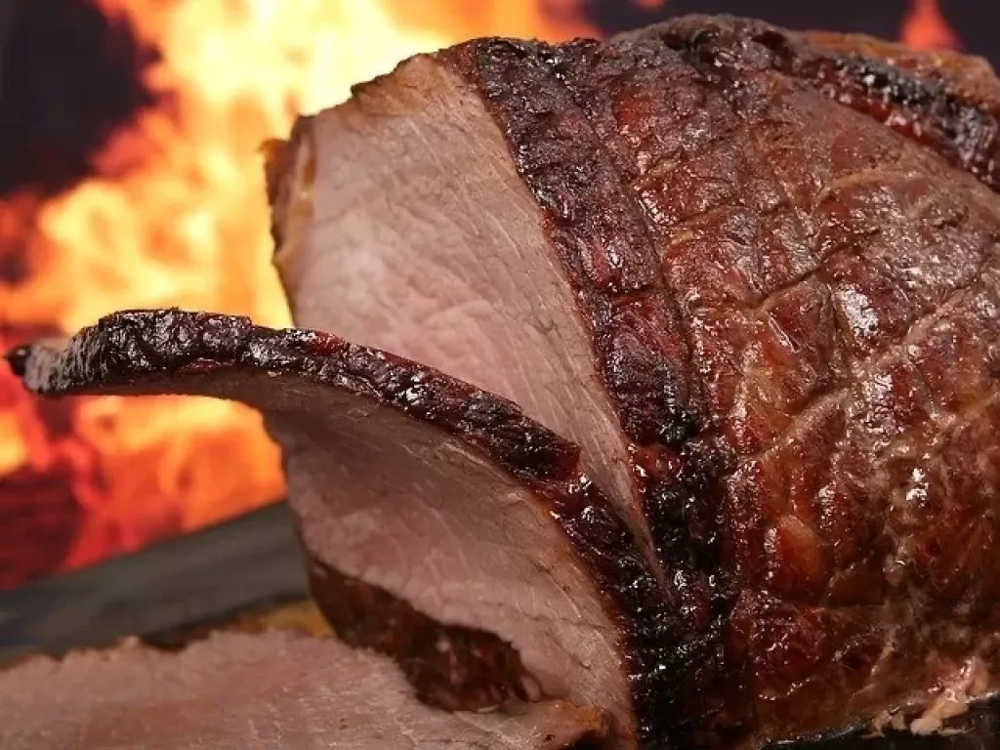
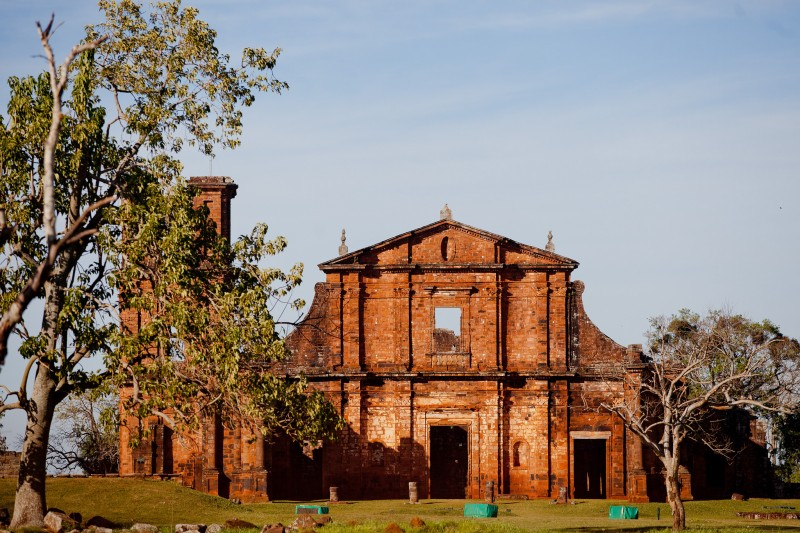

Cultura
A culinária do Rio Grande do Sul tem como tradição a carne de charque, o churrasco e as influências sofridas pela Imigração italiana no Brasil e alemã ocorrida durante o século XIX. Da mistura entre a comida indígena, portuguesa e espanhola e do homem do campo surge a chamada cozinha da Campanha e, com características mais urbana, a cozinha da região missioneira. São muito populares pratos como o churrasco, o arroz de carreteiro e o galeto ao Primo Canto, além de receitas mais contemporâneas, como o bauru gaúcho.
Saiba Mais!Caracteristicas

O Rio Grande do Sul está localizado no extremo sul do Brasil. É formado por 497 municípios e sua área total é de 281.707,15 quilômetros quadrados, incluindo as áreas da laguna dos Patos e da lagoa Mirim. Com uma população de 10.882.965 habitantes em 2022, aproximadamente 5,4% da população brasileira, é o sexto estado mais populoso do Brasil.
Saiba Mais!Pontos Turisticos
Com identidade cultural diversa, herdada de povos colonizadores, o Rio Grande do Sul é um dos principais destinos turísticos do Sul do Brasil. Do Litoral a Fronteira Oeste, do Chuí até as Missões, passando pela Serra Gaúcha, prestigiada nacionalmente, o estado oferece roteiros com belas paisagens, arquitetura renomada e gastronomia de qualidade.
Saiba Mais!